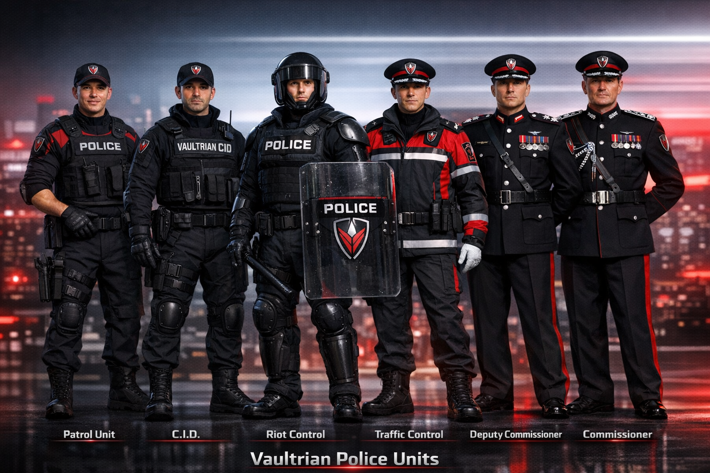

National civil enforcement — ranks, specialized divisions, and how data + command flow work under Custodian of Order. Community-level Sentinels handle local predictive order and stabilization (distinct role). For elite internal strike operations, see Enforcers; economy ties: CV / TV.
Unit lineup

Patrol · CID · Riot Control · Traffic · command dress — tactical field to strategic authority, one shield.
Traffic officers; route supervisors; city traffic controller (aligned to Inspector / Superintendent by zone).
Cyber-aligned investigative work intersects Cyber Command where doctrine assigns joint tasking.
How control actually flows
Official hierarchy = ranks; actual tempo = data + command
System or AI flags an incident
Inspector receives alert and sets posture
Sergeant deploys the team
Constables execute
ConstablesAct on the ground.
SergeantsControl the team.
InspectorsDecide and own the op.
SuperintendentsCoordinate regions.
CommissionerCommands nationally.
Vaultrian controls
AI oversight layer
Every rank is instrumented — decisions can be logged, approved, flagged, or escalated. Accountability stays human; the system does not replace the chain, it pressures it toward speed and consistency.
Priority override
At high threat levels, lower ranks may act immediately within doctrine — no bureaucratic wait when lives or core assets are at risk. After-action review still applies.
Quick reference
Commissioner — national control ·
Deputy Commissioner — support command ·
Superintendent — regional ·
Inspector — unit / station ·
Sergeant — team ·
Constable — frontline
Insight
Clear authority, fast response, total alignment to national command — without a separate “shadow police.”
Why people join (service covenant)
Attractive, not only strict
You don’t just enforce the system — you become part of its core.
1. Financial power
Above-average Core Vyr (CV) base; bonuses for fast response, successful operations, and high-risk tasking